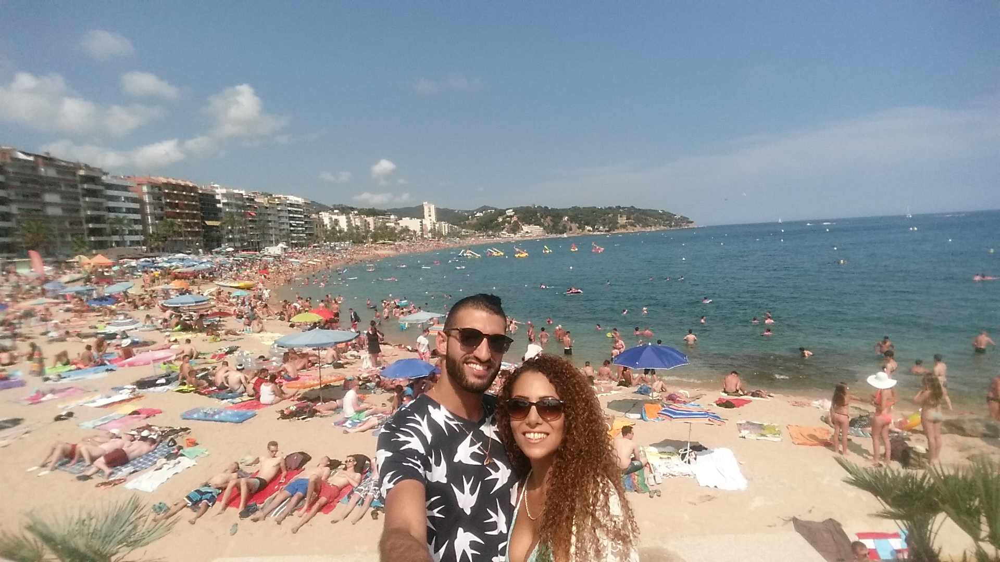
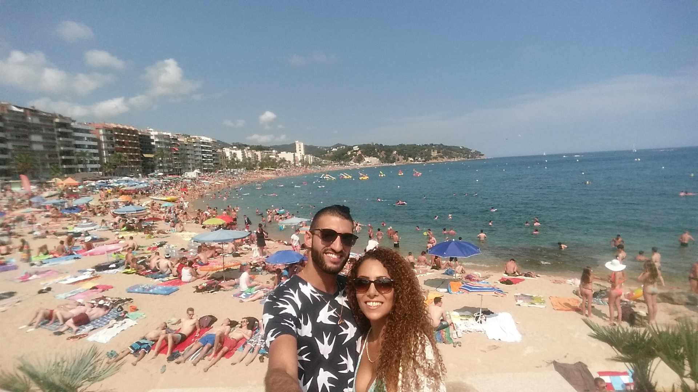

Burgas, sometimes transliterated as Bourgas, is the second largest city on the Bulgarian Black Sea Coast in the region of Northern Thrace and the fourth-largest in Bulgaria after Sofia, Plovdiv, and Varna, with a population of 202,694 inhabitants, while 277,922 live in its urban area.
It is the capital of Burgas Province and an important industrial, transport, cultural and tourist centre.
The city is surrounded by the Burgas Lakes and located at the westernmost point of the Black Sea, at the large Burgas Bay. The LUKOIL Neftochim Burgas is the largest oil refinery in southeastern Europe and the largest industrial enterprise. The Port of Burgas is the largest port in Bulgaria, and Burgas Airport is the second most important in the country. Burgas is the centre of the Bulgarian fishing and fish processing industry.
Link to list of Burgas destinations